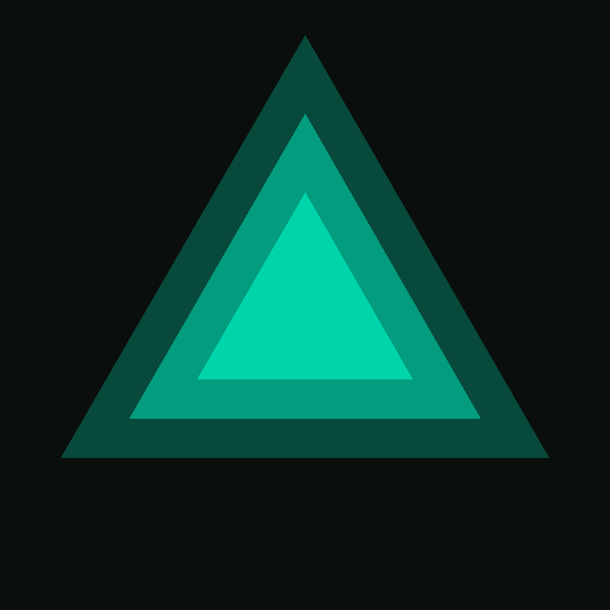

A black instrument panel with one teal phosphor color and big mono numerals. Built for a sweaty user mounting a phone or iPad on a cable rack and reading it from 8 ft. This page indexes the tokens, components, and principles.
#1f2c2e hairline is the only edge treatment.